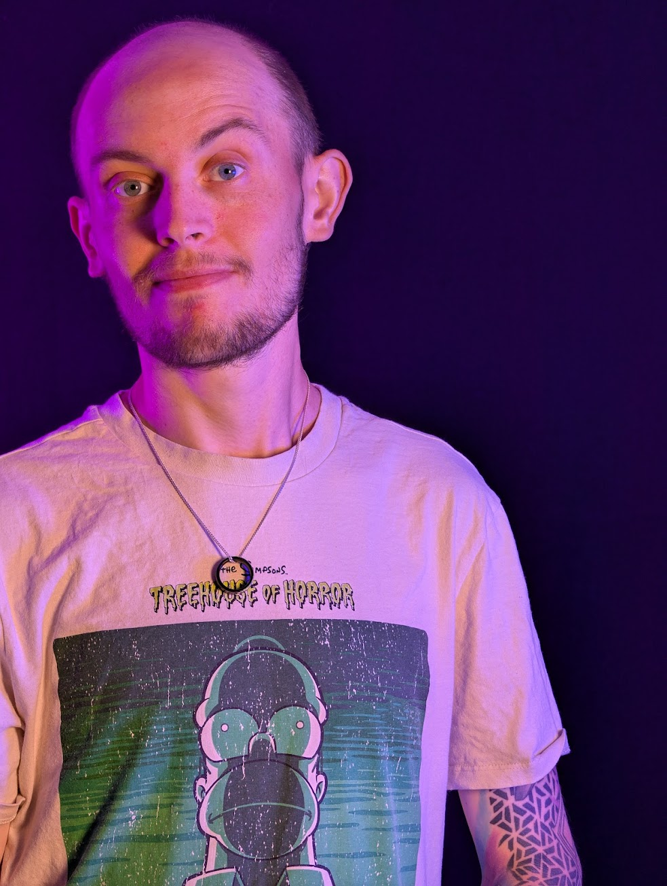

Ben Chittenden
Game Design Portfolio
Game Designer and Technical Programmer specializing in advanced Blueprint visual scripting, PCVR, multiplayer mechanics, and complex engine systems.
A showcase of systems, maps, and logic built across multiple engines.
Cars... But Violent is a 4-player local split-screen vehicular combat game. As the sole developer, I built all of the systems, designed all of the maps, and modelled/animated every asset. The game also contains a branching AI developed by myself as well.

Mechanize is a VR Destruction-based game akin to the 1980s classic Rampage where the player is tasked with destroying a city in the most destructive way possible using both the environment and enemies to gain as many points as possible.

In this game, you have one goal. Defend the Elementalists' tower from an onslaught of incoming enemies using a variety of abilities. What's the highest wave you can get to?

A showcase of non-game technical projects, immersive environments, and digital history.
My role in this has been as a Technical Designer/Programmer where any systems within the project are of my design and creation.
A semi-interactable 3D environment designed and themed around Herne Bay’s Cains amusements in the 1980s, populated with accurate 3D models of machines that would’ve been present during the 80s. The space will feature key details from the span of the 80s but that may not have been present concurrently.

A digital pop-up book detailing the history of Canterbury's most historic and iconic buildings. Within this project, I developed the pop-up book system, along with the ability to add as many pages as wanted in order to allow the project to grow if wanted in the future.

A showcase of Sequencer animations, technical art, and real-time engine rendering.
A short, real-time cinematic sequence entirely created and captured from within Unreal Engine. This project showcases the power of the engine's real-time rendering, utilizing advanced material shaders, dynamic post-processing effects, and UE's robust Sequencer tool to direct and capture a dynamic space-flight animation featuring a TARDIS traversing the atmosphere.

Forensic Science
Establishing a strong analytical mindset, structural investigation methodology, and meticulous attention to detail before transitioning into technical programming and systems design.
MA in Game Design
Canterbury Christ Church University
Advanced study focusing on game architecture, VR/AR interactions, collaborative development pipelines, and advanced engine implementation.
Technical Lead
Canterbury Christ Church University
Managed VR/AR development, virtual production, and interactive systems design. Developed technical pipelines for projects including Arcade Britannia and Bot Brawlers. Built robust architecture utilizing advanced Blueprint visual scripting, motion capture, and 3D printing hardware integration.
Ben Chittenden
Unreal Engine Gameplay Programmer
I am an Unreal Engine Gameplay Programmer and Creative Technologist based in Faversham, England. My core strength lies in translating complex game design concepts into efficient, scalable systems within Unreal Engine, with a heavy specialization in advanced Blueprint visual scripting.
With over a decade of professional experience spanning VR/AR development, virtual production, local multiplayer AI, and digital heritage interactive systems—including past experience as a Technical Lead at Canterbury Christ Church University—I excel in environments that require both creative problem solving and rigorous technical execution. I am passionate about engineering clean, highly optimized Blueprint architectures, supported by targeted C++ integrations, to build intuitive tools that empower the entire development team.